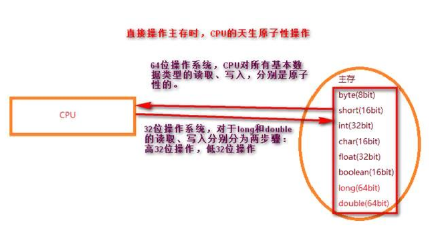
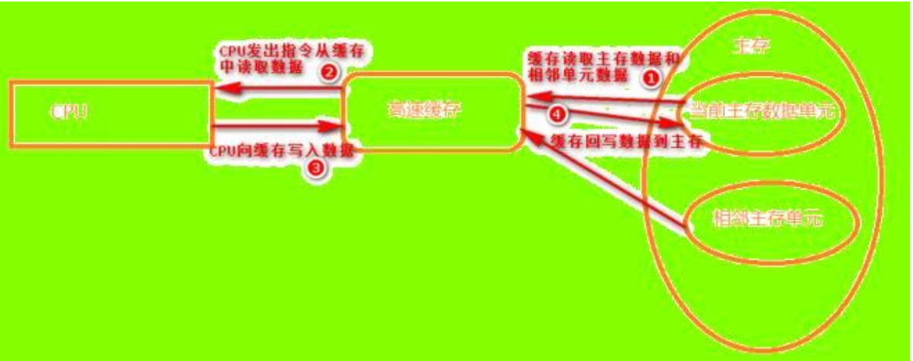
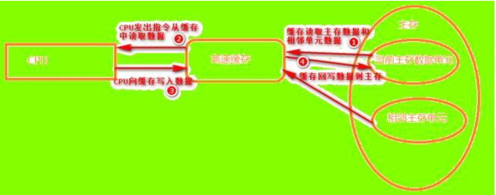
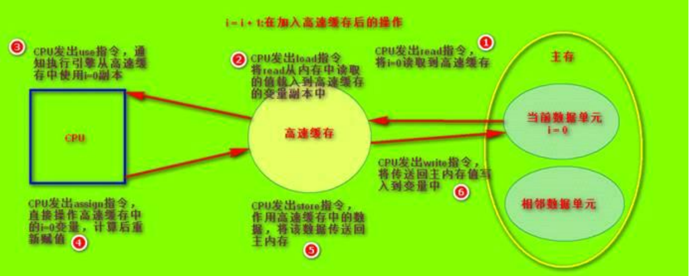
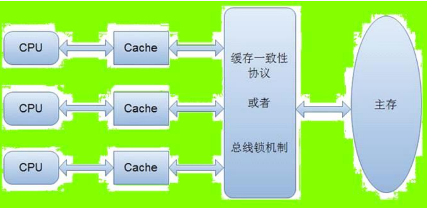

1.1、 疑问？
1. 抛开Java语言本身，对于单线程操作和多线程并发操作，CPU自身是如何执行的？
2. CPU为了性能做了哪些努力？
3. CPU底层进行变量的读取和写入是安全的么？
4. CPU的读操作是原子操作么？
5. CPU的写操作是原子操作么？
6. CPU的读和写放在一起还是原子操作么？
7. CPU的原子操作体现在代码上还是原子操作么？
8. 什么是原子操作？
9. JVM为CPU的执行做了哪些努力？
10. volatile关键字感觉是JVM规范一直没有描述清楚的一个关键字，在JAVA 5之前，它是一个饱受争议的关键字，因为在程序中使用它往往会导致出人意料的结果。在JAVA 5之后，volatile关键字才得以重获生机。volatile关键字的原理是什么？它的作用呢？
1.2、 并发还是并行？
1. 并发：多个客户端同时发出多个相同的请求，服务端有可能是并行执行的，也有可能是串行执行的，也有可能是交替执行的。当单核CPU时，实际上服务器对于并发是交替执行的，并没有真正的并行。
2. 并行：服务端是真正的并行执行，多核CPU时，服务端是多个CPU真正的并行执行。
tips：不论是并发还是并行，对于客户端来说都是一样的，就是服务器并行处理任务。
1.3、 死锁、饥饿、活锁？
1. 死锁：多个线程彼此互相等待并阻塞，彼此都不能执行。
2. 饥饿：某个线程疯狂占用锁资源不释放，其他线程无法获得该锁资源长期处于饥饿状态，无法执行自己的任务。
3. 活锁：两个线程彼此谦让，结果是两个线程都无法获得锁资源，因此都无法执行自己的任务。
1.4、 CPU的上锁机制分类？
1. lock#：锁总线，禁止cpu总线和其他部件的通信【总线上锁，解决缓存一致性问题】。
2. 锁缓存：将高速缓存中某一块空间进行锁定，并使其失效即清空该缓存中的值【缓存一致性协议】。
3. 锁内存：当cup发出assign指令后（注意上锁的时机，volatile锁持有的时间短），将物理内存中某一块内存地址锁定，禁止其他线程操作，并立即将缓存中assign后的新值回写到主内存中，其他线程短暂性阻塞【volatile作用】。
4. 锁内存（互斥锁）：同样是锁内存，当cpu进入到临界资源后（即从cpu最开始发出read指令后即对对应的内存地址整体上锁，上锁时间长，锁的持有时间长），将物理内存中某一块内存地址锁定，禁止其他线程操作，其他线程将长时间阻塞【synchronized调用的操作系统互斥锁基于此原理】。
tips：
在这里提一下CAS算法。
CAS算法底层调用的是CPU的CMPXCHG指令实现的，这个指令是原子指令，并且没有调用任何的CPU锁。
CAS算法基于乐观锁，采用无限比较交换原则实现原子性，但是CAS依赖于volatile。
所以，这两者结合在一起就调用了volatile的轻量级锁，只导致其他线程短暂性阻塞，这也是CAS无锁编程性能高的原因。
2、计算机内存模型2.1、 CPU操作主存和缓存的指令
对于任何一个变量（该变量指的是共享变量，方法变量本身是在线程私有栈内存中诞生的 ），是如何从主内存中拷贝到工作内存、又如何从工作内存中回写到主内存中的实现细节，Java内存模型定义了以下8种操作指令来完成。
Java虚拟机必须保证以下提及的每一种操作指令都是原子性的、不可再分的（对于long和double类型的变量来说，load、store、read和write指令在某些平台上允许有例外）：
1. lock（锁定）：作用于主内存中的变量，把一个变量标识为一条线程独占的状态。 作用内存：主内存。
2. unlock（解锁）：作用于主内存的变量，把一个处于锁定状态的变量释放出来，释放后的变量才可以被其他线程锁定。 作用内存：主内存。
3. read（读取）：作用于主内存的变量，把一个变量的值从主内存传输到线程的工作内存，以便随后的load动作使用，注意read只是一个传输命令。 作用内存：主内存。
4. load（载入）：作用于工作内存的变量，把read操作从主内存中得到的变量值写入工作内存的变量副本中。 作用内存：工作内存。
5. use（使用）：作用于工作内存的变量，把工作内存中一个变量的值传递给执行引擎，每当虚拟机遇到一个需要使用到变量的值的字节码指令时将会执行这个操作，也是一个传输命令。 作用内存：工作内存。
6. assign（赋值）：作用于工作内存的变量，把一个从执行引擎接收到的值赋给工作内存的变量，每当虚拟机遇到一个给变量赋值的字节码指令时执行这个操作，注意assign是赋值操作。 作用内存：工作内存。
7. store（存储）：作用于工作内存，把工作内存中的一个变量的值传送给主内存中，以便随后的write操作使用，store是一个传输命令。 作用内存：工作内存。
8. write（写入）：作用于主内存的变量，把store操作从工作内存得到的变量的值放入主内存的变量中。 作用内存：主内存。
如果要把一个变量从主内存复制到工作区，就要顺序地执行read和load操作；如果要把变量从工作内存同步回主内存，就要顺序的执行store和write操作。
注意，4,5,6,7中的4个步骤（load,use,assign,store）操作的都是工作内存，即线程私有的，意味着这4个步骤无论如何是不可能被其他线程中断的，即原子的。
Java内存模型只要求上述两个操作必须按顺序执行，而不是连续执行。因此在read与load之间、store与write之间是可插入其他指令的。除此之外，Java内存模型还规定了在执行上述8种基本操作时必须满足如下规则：
1. 不允许read和load、store和write操作之一单独出现，即不允许一个变量从主内存读取了但工作内存不接受，或者从工作内存发起回写了但主内存不接受的情况。
2. 不允许一个线程丢弃它最近的assign操作，即变量在工作内存中改变后必须将该变化同步回主内存。
3. 不允许一个线程无原因的（没有发生过任何assign操作）把数据从线程的工作内存同步回主内存中。
4. 一个新的变量只能在主内存中“诞生”，不允许在工作内存中直接使用未被初始化（load或assign）的变量。也就是说，在对一个变量实施use、store操作之前，必须先执行了load、assign操作。
5. 一个线程在同一时刻，只允许一个线程对其进行lock操作，但lock操作可以被一个线程重复执行多次，执行了多少次lock操作，就必须在执行同样次数的unlock操作后，变量才会被解锁。
6. 如果对一个变量执行了lock操作，那么将会清空工作内存中此变量的值，在执行引擎使用这个变量前，需要重新执行load或assign操作初始化变量的值（保证可见性）。
7. 如果一个变量没有被lock操作锁定，那就不允许对它执行unlock操作，也不允许unlock一个被其他线程锁定的变量。
8. 对一个变量执行unlock操作之前，必须先把此变量同步回主内存中（执行store、write操作），即必须保证原子性。
2.2、 CPU从硬件层面采用高速缓存
1. 最早时，CPU是直接操作主内存的。
计算机在执行程序时，每条指令都在CPU中执行，而执行指令的过程，涉及到数据的读取（read ）、处理（load,use,assign,store ）、写入（write ）。这三步分别是原子性的。
CPU的天生原子性：
在直接操作主存的前提下，CPU在对基本类型数据的读取操作和写入操作是天生原子性的（32位操作系统对java中64bit的long和double类型是分步读取和分步写入的，所以32位系统对long和double不保证天生原子性），注意是读操作、写操作，分别是原子性；读和写放在一起就不是原子性操作。如下图：

2. 多线程环境下，CPU直接操作主存，能保证数据安全性吗？
如果直接操作主存，那么任何一个变量都是共享变量，看一个简单的赋值操作：
private int a;
void run(){
a = 100;
a = a + 1000;
}
run()方法中只是对a进行了赋值操作。
（1）单线程环境下，过程是：
CPU发出read指令，从主存中读取a的默认值0，这一步是天生原子性操作，一次完成；
CPU发出assign指令，将a的值修改为100，这一步是天生原子性操作，一次完成；
CPU发出write指令，将修改后的值写入到主存中，这一步是天生原子性操作，一次完成；
CPU发出read指令，从主存中读取a的值100，这一步是天生原子性操作，一次完成；
CPU发出assign指令，将a的值修改为100+1000，这一步是天生原子性操作，一次完成；
CPU发出write指令，将修改后的值写入到主存中，这一步是天生原子性操作，一次完成；
最终a的值是1100，没有问题。
（2）多线程环境下，过程可能是：
线程1从主存中读取a的默认值0；
线程1将a的值修改为100，然后写入到主存；线程1阻塞。
线程2从主存中读取a的值100（此时a的值被线程1修改了），赋值为100后写入到主存；
线程2从主存中读取a的值100，加上1000后写入到主存；此时a的值是1100。
线程1唤醒后从主存中读取a的值，此时是1100，加上1000后然后写回到主存。
最终a的值是2100。
因此，CPU直接操作主存，没法保证线程安全性。
3. CPU加入高速缓存。
由于程序运行过程中的临时数据是存放在主存（物理内存）当中的，这时候就存在一个问题：由于CPU执行速度很快，而从物理内存中读取数据和向物理内存写入数据的过程跟CPU执行指令的速度比起来慢得多，因此如果任何时候对数据的操作都要通过和物理内存的交互来进行，会大大降低指令执行的速度。如下图：
 因此在CPU的设计里面就有了高速缓存（这是硬件常识，尽管JVM定制了独特的JVM内存模型，但是并没有改变CPU这种使用高速缓存读取数据和写入数据的方式）。
高速缓存作用：本质是一块独特且效率更高的内存，距离CPU更近，读取和写入速度几乎等同于CPU指令的执行速度。
4. 为什么加入高速缓存后避免了主存对CPU执行速度的影响呢？
有人会说，既然每次CPU操作一个变量a，都是从主存中读取，处理后，写回主存，那么加入高速缓存后，CPU同样是从主存中读取，还得复制变量a的副本到高速缓存中操作，操作完成后还得将高速缓存中的变量副本刷新回主存，既然每次操作一个变量都是这些步骤，很显然这不但没有提升CPU执行效率，而且还多个变量副本复制的步骤，不应该更加影响性能吗？
解答：对于CPU，数据成千上万，在操作成千上万的数据时，高速缓存对数据副本的缓存过程遵循程序局部性原理。
5. 什么是程序局部性原理？
程序局部性原理设计为：
正在使用主存储器某一单元邻近的那些单元将被用到的概率很大，因此当CPU存取某一主存储器单元数据时，计算机硬件就自动的将包括该单元在内的那一组单元内容调入高速缓存。当程序发送到CPU被执行时，会将运算需要的数据和相邻的数据单元从主存（物理内存）复制一份到CPU的高速缓存中，那么CPU进行计算时就可以直接从它的高速缓存读取数据和向其中写入数据，而后续对相邻数据单元的数据也是直接从高速缓存中读取。当运算结束之后，再将高速缓存中的数据刷新到主存当中。
如下图：

6. 多线程环境下，加入高速缓存，CPU能保证数据正确吗？答案：更不能保证。
如果加入缓存，那么变量复制到缓存中就是线程私有的，看一个简单的赋值操作：
因此在CPU的设计里面就有了高速缓存（这是硬件常识，尽管JVM定制了独特的JVM内存模型，但是并没有改变CPU这种使用高速缓存读取数据和写入数据的方式）。
高速缓存作用：本质是一块独特且效率更高的内存，距离CPU更近，读取和写入速度几乎等同于CPU指令的执行速度。
4. 为什么加入高速缓存后避免了主存对CPU执行速度的影响呢？
有人会说，既然每次CPU操作一个变量a，都是从主存中读取，处理后，写回主存，那么加入高速缓存后，CPU同样是从主存中读取，还得复制变量a的副本到高速缓存中操作，操作完成后还得将高速缓存中的变量副本刷新回主存，既然每次操作一个变量都是这些步骤，很显然这不但没有提升CPU执行效率，而且还多个变量副本复制的步骤，不应该更加影响性能吗？
解答：对于CPU，数据成千上万，在操作成千上万的数据时，高速缓存对数据副本的缓存过程遵循程序局部性原理。
5. 什么是程序局部性原理？
程序局部性原理设计为：
正在使用主存储器某一单元邻近的那些单元将被用到的概率很大，因此当CPU存取某一主存储器单元数据时，计算机硬件就自动的将包括该单元在内的那一组单元内容调入高速缓存。当程序发送到CPU被执行时，会将运算需要的数据和相邻的数据单元从主存（物理内存）复制一份到CPU的高速缓存中，那么CPU进行计算时就可以直接从它的高速缓存读取数据和向其中写入数据，而后续对相邻数据单元的数据也是直接从高速缓存中读取。当运算结束之后，再将高速缓存中的数据刷新到主存当中。
如下图：

6. 多线程环境下，加入高速缓存，CPU能保证数据正确吗？答案：更不能保证。
如果加入缓存，那么变量复制到缓存中就是线程私有的，看一个简单的赋值操作：
private int a;
void run(){
a = 100;
a = a + 1000;
}
7. 从上面CPU操作主存还是高速缓存的案例，我们比较纠结一点：到底什么才是原子性？
多线程环境下，不论CPU操作主存还是通过高速缓存间接操作主存，尽管CPU对简单赋值操作底层不是原子性（拆分了很多步骤），但是整个操作中若是对共享变量的写入操作能够保证自证性（就是共享变量的更新值是由当前线程自己之前操作的，自我验证），就能保证线程安全。
后面描述的并发三要素：原子性、可见性、有序性，其最终目的就是保证共享对象的自证性。
什么是真正的原子性？
private int a;
void run(){
a = 100;
a = 1000;
a = 1;
}
如果从操作步数来讲，上面对a的操作就不是原子性；但是多线程环境下，每个线程的执行结果最终都是1的。那么什么是真正的原子性呢？
所谓的原子性操作其实不是看操作拆分成多少步，因为哪怕对代码而言就是一个步骤，对于CPU而言其内部都是分为很多步执行的。CPU在代码上的体现压根就没有原子性操作。原子性不能保证多线程环境下数据一定是安全的。共享数据的安全一定是同时满足原子性、可见性、有序性；缺一不可。
如何对原子性有个合适的定义，让我思索了无数次。
原子性应该是：共享变量被更改的操作不依赖于其他线程的操作结果。这样的定义更符合我们代码层面上广义的原子性。
说明：
如果一个共享变量的更改操作不依赖于其他线程的结果，比如a = 100;这个赋值操作就是原子操作。而对于a = a +1;因为a的更改操作依赖a的值，更改缓存中a的值时，对每个线程而言，这个更改操作都有可能依赖其他线程操作的a的值，所以a = a+1;不是原子性操作。
理解了真正的原子性之后，就会发现原子性其实关注的是依赖性，当一个值不依赖另外一个可变的值，才是真正的原子性。但是即便是真正的原子性仍旧不能保证线程安全，还得考虑可见性和有序性。（重点啊！原子性只关注依赖性，但是它不保证写入的时机和重排序的影响，所以满足原子性，还必须同时满足可见性和有序性才能保证线程安全。具体借鉴CAS原子操作算法）
2.3、 CPU加入高速缓存带来的破坏性
CPU为了提升性能，加入了高速缓存，那么，加入高速缓存之后带来了哪些破坏性呢？
造成缓存一致性问题:
既然加入了高速缓存，那么在多线程环境下，多个线程对象的高速缓存中的缓存行副本有可能不一致。之所以缓存不一致，是因为某个线程做了更改操作，其他线程对象的高速缓存区没法感知。
举个简单的例子，比如下面的这段代码：
i = i + 1;//首先这个操作不是原子操作。因为它更改缓存数据的操作有可能被中断。
当线程执行这个语句时，会先从主存当中读取i的值，然后复制一份到高速缓存当中，然后CPU执行指令对i进行加1操作，然后将数据写入高速缓存，最后将高速缓存中i最新的值刷新到主存当中。这句代码在单线程环境下的执行过程如下：

这个代码在单线程中运行是没有任何问题的，但是在多线程中运行就会有问题了。在多核CPU中，每条线程可能运行于不同的CPU中，因此每个线程运行时有自己的高速缓存（对单核CPU来说，其实也会出现这种问题，只不过是以线程调度的形式来分别执行的）。
比如同时有2个线程执行这段代码，初始时i的值为0，那么我们希望两个线程执行完之后i的值变为2。但是事实会是这样吗？
可能存在下面一种情况：
初始时，两个线程分别读取i的值存入各自所在的CPU的高速缓存当中，然后线程1进行加1操作，然后把i的最新值1写入到内存。
此时线程2的高速缓存当中i的值还是0，进行加1操作之后，i的值为1，然后线程2把i的值写入内存(对于同一个CPU，两个线程分别将i的值写入到自己的高速缓存中，即高速缓存这个东西对每个线程而言都是独立存在的)。
最终结果i的值是1，而不是2。这就是著名的 缓存一致性问题。
通常称这种被多个线程访问的变量为共享变量。也就是说，如果一个变量在多个CPU的多个线程对象中都存在缓存（一般在多线程编程时才会出现），那么就可能存在缓存不一致的问题。
对于单线程不存在高速缓存数据不一致性问题，因为只有一个线程对象操作变量i，i永远都只存在于一个线程对象的高速缓存中。
2.4、 CPU对缓存一致性问题的解决（缓存一致性协议）
CPU为了解决缓存不一致性问题，通常来说有以下2种解决方法：
1. 通过在总线加LOCK#锁的方式
2. 通过缓存一致性协议
这2种方式都是硬件层面上提供的方式。
在早期的CPU当中，是通过在总线上加LOCK#锁的形式来解决缓存不一致的问题。因为CPU和其他部件进行通信都是通过总线来进行的，如果对总线加LOCK#锁的话，也就是说阻塞了其他CPU对其他部件访问（如内存），从而使得只能有一个CPU能使用这个变量的内存。
比如上面例子中，假设一个线程在执行 i = i +1，如果在执行这段代码的过程中，在总线上发出了LCOK#锁的信号，那么只有等待这段代码完全执行完毕之后，其他CPU才能从变量i所在的内存读取变量，然后进行相应的操作。这样就解决了缓存不一致的问题。
但是上面的方式会有一个问题，由于在锁住总线期间，其他CPU无法访问内存，导致效率低下。
所以就出现了缓存一致性协议。后期的CPU不再通过总线加LOCK#锁的方式实现缓存一致性。最出名的就是Intel 的MESI协议，MESI协议保证了每个缓存中使用的共享变量的副本是一致的。
在《Java并发编程的艺术》中有这一段描述：“在多处理器下，为了保证各个处理器的缓存是一致的，就会实现缓存一致性协议，每个处理器通过嗅探在总线上传播的数据来检查自己缓存的值是不是过期了，当处理器发现自己缓存行对应的内存地址被修改，就会将当前处理器的缓存行设置成无效状态，当处理器对这个数据进行修改操作的时候，会重新从系统内存中把数据读到处理器缓存里。”我们需要注意的是，这里的修改操作，是指的一个操作。
根据自己的理解如下：
缓存一致性协议：当CPU发出read指令从主存中读取数据时，如果发现操作的变量是共享变量，即在其他CPU中也存在该变量的副本，当该变量的内存地址被修改，会发出信号通知其他CPU和其他线程将该变量的缓存行置为无效状态，因此当其他CPU或线程需要使用（use）这个变量时，发现自己缓存中缓存该变量的缓存副本是无效的，那么它就会从物理内存重新读取（read），保证了多个线程每次use的时候都从主存读取。
在这里要注意缓存一致性每个操作的时机。它只保证多个线程对象每次在use缓存行数据的时候都从主存读取值（缓存行数据已经失效），但当已经进行了read操作并发出use指令之后（此时没有执行assign操作，此时的缓存行数据已经发送给了执行引擎），它不会重新从内存read，且它并不保证CPU将最新值写回到主存的时机。
筒体上如下图：

3、CPU为性能做的努力
1. CPU从硬件层面采用高速缓存和指令重排序
目的只有一个：提升计算性能！
造成的缺陷：单线程环境下没缺陷，多线程环境下导致了缓存不一致问题、有序性问题。从而为线程安全埋下了定时炸弹！
2. CPU本身如何解决上述缺陷？
（1）缓存一致性问题：
CPU总线加LOCK#锁（已经过时）；
采用缓存一致性协议(Intel 的MESI协议，该协议被应用在Intel奔腾系列的CPU中)；
（2）指令重排序问题：
CPU对指令重排序无能为力，只能依靠具体的语言机制去控制！
2. CPU导致的缓存不一致问题和可见性问题是同一个问题吗？
如果学习了后边，有人会疑惑，既然CPU在硬件层面采用了缓存一致性协议，那么为什么后边还需要在java中使用volatile关键字保证可见性？
答案：可见性和缓存一致性不是一回事。
缓存一致性保证:
多个线程的高速缓存区中的数据副本一定是一致的。即当线程A修改（assign）了变量i，此时通过CPU总线通知其他线程的高速缓存区的缓存行副本全部失效，当其他线程use该数据时重新从主存中读取。很明显，缓存一致性协议只保证其他线程每次在use数据时都从主存中重新read值，而不保证最新值write到主存的时机。当线程A修改i的值为100，此时还没有回写到主存中，主存中还是默认值0；此时其他线程对象通过总线得知A中的副本被更改了，所以其他线程中的副本失效，当其他线程发出use指令要使用该数据时发现缓存失效，则重新从主存中读取；但是此时主存中的数据其实还是旧数据0，所以还是脏数据。为什么缓存一致性协议不保证最新值写回主存的时机呢？如果要保证就要对主存上Lock#锁，这样从硬件层面降低了性能，因为并不是所有代码都存在并发场景，所以对于大量的上锁操作只好移交给不同的语言自己去实现（缓存一致性协议没有上锁，只是通过CPU总线发出信号通知其他线程缓存行副本失效而已，所以不影响性能）。
volatile关键字保证:
任何被volatile修饰的变量，当该变量被读取到缓存副本中且修改（assign）后，则主存中关于该变量的内存空间将被锁定，不允许任何线程修改。而当前线程对该缓存副本的任何修改都及时写回主内存。由此可见，volatile关键字锁定了主存，保证了立刻写回主内存。但是只用volatile关键字是不够的，还得依靠缓存一致性协议，要不然其他线程对象依旧会从高速缓存中读取旧数据，而不会直接从主存中读取！
总结：
缓存一致性保证了多线程操作共享变量，一旦被更改，则其他线程都从主存读取，从而从读取操作上保证了缓存一致性（其实是缓存失效性）！
volatile保证了多线程操作共享变量，一旦被更改，则当前最新缓存行数据立即写回主存并在写入期间锁定主存，禁止其他线程读取，当写入完成，其他线程才能从主存中读取该变量的最新值，从而从写入时机上保证了主存的可见性。
4、并发编程中的三个概念
在并发编程中，我们通常会遇到以下三个问题：原子性问题，可见性问题，有序性问题。我们先看具体看一下这三个概念：
1. 原子性
原子性：即一个操作或者多个操作 要么全部执行并且执行的过程不会被任何因素打断，要么就都不执行。
一个很经典的例子就是银行账户转账问题：
比如从账户A向账户B转1000元，那么必然包括2个操作：从账户A减去1000元，往账户B加上1000元。
试想一下，如果这2个操作不具备原子性，会造成什么样的后果。假如从账户A减去1000元之后，操作突然中止。然后又从B取出了500元，取出500元之后，再执行 往账户B加上1000元 的操作。这样就会导致账户A虽然减去了1000元，但是账户B没有收到这个转过来的1000元。
所以这2个操作必须要具备原子性才能保证不出现一些意外的问题。
同样地反映到并发编程中会出现什么结果呢？
举个最简单的例子，大家想一下假如为一个32位的变量赋值过程不具备原子性的话，会发生什么后果？
i = 9;//相当于i = a + b;
假若一个线程执行到这个语句时，我暂且假设为一个32位的变量赋值包括两个过程：为低16位赋值，为高16位赋值。
那么就可能发生一种情况：当将低16位数值写入之后，突然被中断，而此时又有一个线程去读取到i的值，那么读取到的就是错误的数据。
但显然，单线程环境下不管是不是原子性操作都不会影响结果的正确性。
2. 可见性
可见性是指当多个线程访问同一个变量时，一个线程修改了这个变量的值，其他线程能够立即看得到修改的值。很明显，java中就是通过volatile关键字保证内存可见性的。
举个简单的例子，看下面这段代码：
//线程1执行的代码
int i = 0;
i = 10;
//线程2执行的代码
j = i;
假若执行线程1的是CPU1，执行线程2的是CPU2。由上面的分析可知，当线程1执行 i =10这句时，会先把i的初始值加载到CPU1中线程1的高速缓存中，然后赋值为10，那么在CPU1的线程1的高速缓存当中i的值变为10了，却没有立即写入到主存当中。
此时线程2执行 j = i，它会先去主存读取i的值并加载到CPU2的缓存当中，注意此时内存当中i的值还是0，那么就会使得j的值为0，而不是10。
这就是可见性问题，线程1对变量i修改了之后，线程2没有立即看到线程1修改的值。
显然，可见性只在多线程环境下存在，单线程环境下可见性不影响结果的正确性。
3. 有序性
有序性：即程序执行的顺序按照代码的先后顺序执行。
举个简单的例子，看下面这段代码：
int i = 0;
boolean flag = false;
i = 1; //语句1
flag = true; //语句2
上面代码定义了一个int型变量，定义了一个boolean类型变量，然后分别对两个变量进行赋值操作。从代码顺序上看，语句1是在语句2前面的，那么JVM在真正执行这段代码的时候会保证语句1一定会在语句2前面执行吗？不一定，为什么呢？
这里可能会发生指令重排序（Instruction Reorder）。
下面解释一下什么是指令重排序，一般来说，CPU处理器为了提高程序运行效率，可能会对输入代码进行优化，它不保证程序中各个语句的执行先后顺序同代码中的顺序一致，但是它会保证程序最终执行结果和代码顺序执行的结果是一致的。
比如上面的代码中，语句1和语句2谁先执行对最终的程序结果并没有影响，那么就有可能在执行过程中，语句2先执行而语句1后执行。
但是要注意，虽然CPU处理器会对指令进行重排序，但是它会保证程序最终结果会和代码顺序执行结果相同，那么它靠什么保证的呢？再看下面一个例子：
int a = 10; //语句1
int r = 2; //语句2
a = a + 3; //语句3
r = a*a; //语句4
这段代码有4个语句，那么可能的一个执行顺序是：
那么可不可能是这个执行顺序呢： 语句2 语句1 语句4 语句3
不可能，因为CPU处理器在进行重排序时是会考虑指令之间的数据依赖性，如果一个指令Instruction 2必须用到Instruction 1的结果，那么处理器会保证Instruction 1会在Instruction 2之前执行。
虽然重排序不会影响单个线程内程序执行的结果，但是多线程呢？下面看一个例子：
//线程1:
context = loadContext(); //语句1
inited = true; //语句2
//线程2:
while(!inited ){
sleep()
}
doSomethingwithconfig(context);
上面代码中，由于语句1和语句2没有数据依赖性，因此可能会被重排序。假如发生了重排序，在线程1执行过程中先执行语句2，而此时线程2会以为初始化工作已经完成，那么就会跳出while循环，去执行doSomethingwithconfig(context)方法，而此时context并没有被初始化，就会导致程序出错。
从上面可以看出，指令重排序不会影响单个线程的执行，但是会影响到线程并发执行的正确性。
也就是说，要想并发程序正确地执行，必须要保证原子性、可见性以及有序性。只要有一个没有被保证，就有可能会导致程序运行不正确。